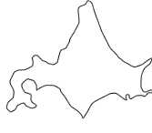
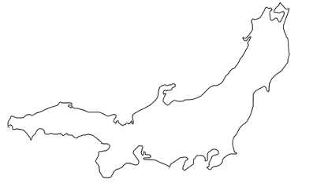
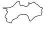
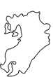

日本列島の４つの島の面積の比率を一対比較により推定する。結果は刀根薫「ゲーム感覚意思決定法」のグループによる決定（p. 40）に従って、総合する。
| 北海道 | 本州 | 四国 | 九州 |
|---|---|---|---|
|  |  |  |  |
人数２８名
| 北海 | 本州 | 四国 | 九州 | 重要度 | 実際の値 | |
|---|---|---|---|---|---|---|
| 北海道 | 1 | 0.27 | 4.47 | 2.40 | 0.21 | 0.21(78,100km2) |
| 本州 | 1 | 10.23 | 6.65 | 0.64 | 0.62(230,700km2) | |
| 四国 | 1 | 0.42 | 0.05 | 0.05(18,800km2) | ||
| 九州 | 1 | 0.10 | 0.12(44,400km2) |